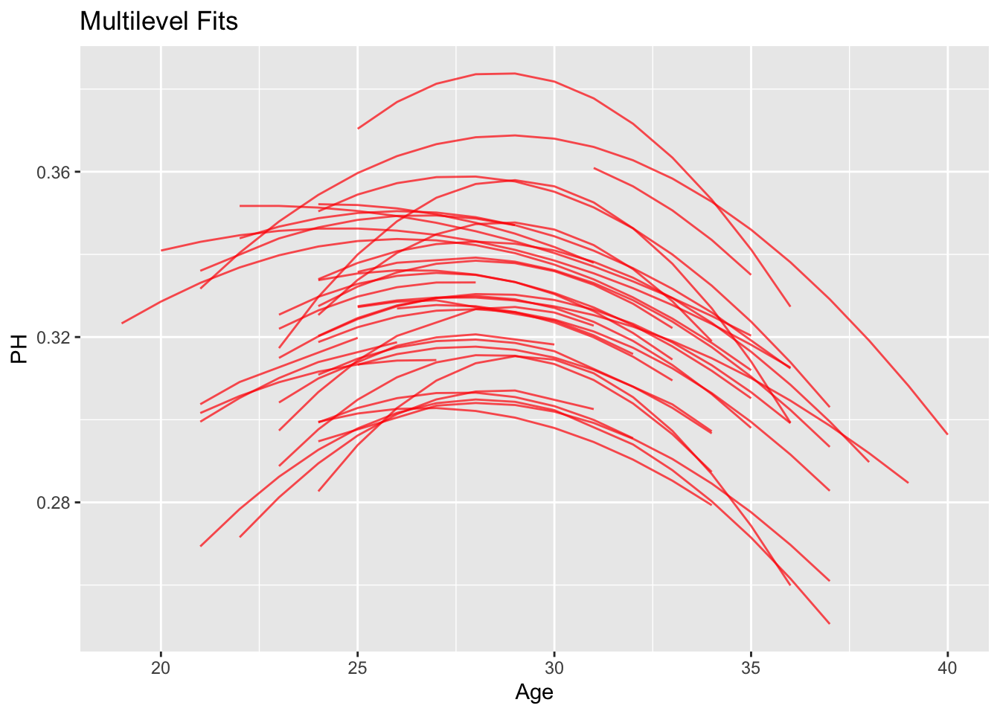
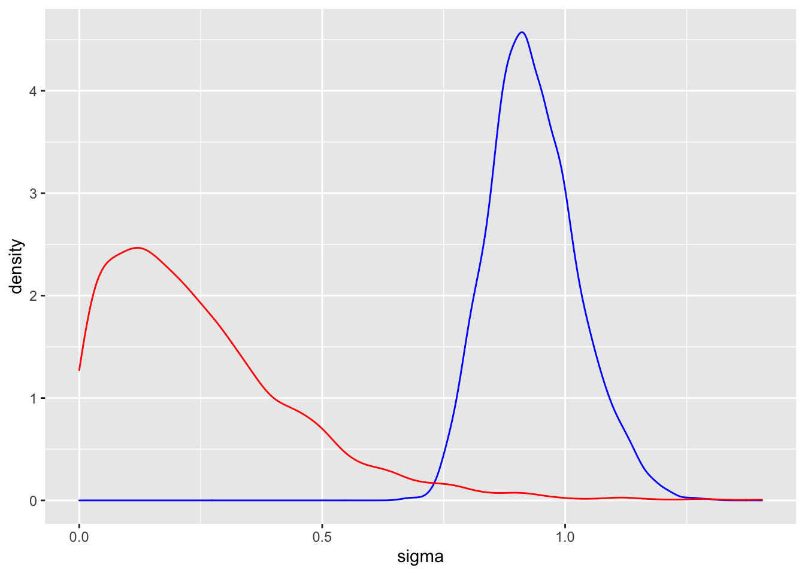

Chapter 9 Multilevel Regression
9.2 Some baseball data
The function get_onbase_data() function collects on-base data for all players born in the year 1977 who have had at least 1000 career plate appearances.
## `summarise()` ungrouping output (override with `.groups` argument)## `summarise()` regrouping output by 'playerID' (override with `.groups` argument)## [1] "Beltran" "Bergeron" "Bigbie" "Bloomquist" "Byrd"
## [6] "Caruso" "Chavez" "Davis" "Ellis" "Everett"
## [11] "Fukudome" "Furcal" "Gerut" "Gibbons" "Gonzalez"
## [16] "Hafner" "Hinske" "Hudson" "Inge" "Jimenez"
## [21] "Jones" "Monroe" "Munson" "Nieves" "Overbay"
## [26] "Pierre" "Punto" "Quinlan" "Redman" "Roberts"
## [31] "Ross" "Rowand" "Sanchez" "Thames" "Tyner"
## [36] "Wigginton" "Wilkerson" "Wilson"9.3 Quadratic aging model
Let \(y_{ij}\) denote the number of on-base events in \(n_{ij}\) opportunities (plate appearances) of the \(i\)th batter in the \(j\)th season. Assume that \(y_{ij}\) is binomial with sample size \(n_{ij}\) and probability of success \(p_{ij}\).
Assume that the on-base probabilities for the \(i\)th player satisfy the logistic model \[ \log \left(\frac{p_{ij}}{1 - p_{ij}}\right) = \beta_{i0} + \beta_{i1} D_{ij} + \beta_{i2} D_{ij}^2 \] where \(D_{ij} = x_{ij} - 30\), \(x_{ij}\) is the age of the \(i\)th player in the \(j\)th season.
9.4 Multilevel Prior
The \(i\)th player’s trajectory is described by the regression vector \(\beta_i = (\beta_{i0}, \beta_{i1}, \beta_{i2})\). We place a two-stage prior on the trajectories \(\beta_1, ..., \beta_N\):
\(\beta_1, ..., \beta_N\) are a sample from a multivariate normal density with mean \(\beta\) and variance-covariance matrix \(\Sigma\).
The second-stage parameters \(\beta\) and \(\Sigma\) are independent with weakly informative priors.
9.5 Bayesian fitting
The fitting of this model is done using the brm() function.
fit <- brm(OB | trials(PA) ~ AgeD + I(AgeD ^ 2) +
(AgeD + I(AgeD ^ 2) | Player),
data = filter(d78, PA > 0),
family = binomial("logit"),
refresh = 0)## Compiling the C++ model## Start samplingI find posterior means of the fitted trajectories for all players.
Player_Fits <- coef(fit)$Player[, "Estimate", ] %>%
as.data.frame() %>%
mutate(Player = 1:max(d78$Player))ggplot(d78, aes(Age, PH, group = Player)) +
geom_line(color = "red", alpha = 0.7) +
ggtitle("Multilevel Fits") 
For a given player, define the peak age \[ Age_j = 30 - \frac{\beta_{j1}}{2 \beta_{j2}}. \] the age at which the player achieves peak performance.
The following graph shows the posterior distributions of the peak ages for all players.
d78 %>% group_by(Player) %>%
summarize(b0 = first(Intercept),
b1 = first(AgeD.y),
b2 = first(IAgeDE2)) %>%
mutate(MLM_Peak_Age = 30 - b1 / 2 / b2) %>%
ggplot(aes(MLM_Peak_Age)) +
geom_histogram(bins = 12,
color = "white", fill = "tan") +
xlim(20, 35)## `summarise()` ungrouping output (override with `.groups` argument)## Warning: Removed 2 rows containing missing values (geom_bar).